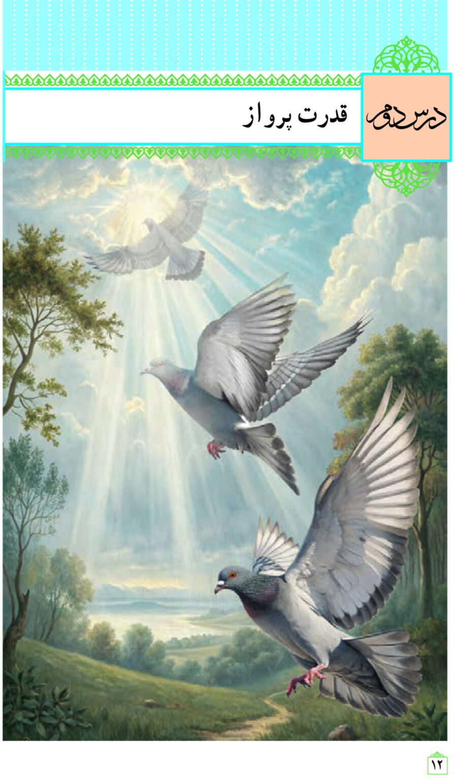

قدرتِ پرواز 🕊️
خداوند در وجود ما سرمایههای بزرگی گذاشته تا بتوانیم به سوی هدف زندگی؛ یعنی تقرّب به خدا پرواز کنیم. در این درس سرمایهها و موانعِ راه پرواز را میشناسیم.
راهنمای معلم: با دکمهٔ «بعدی»، کلیدهای ← و Space یا کشیدن صفحه حرکت کنید؛ پاسخها با دکمهٔ سبزرنگ هر پرسش، سرِ کلاس و پس از فکر کردن دانشآموزان نمایش داده میشود.

در این درس چه یاد میگیریم؟
قرائت آیات و شناخت
۶ سرمایهٔ انسان
چرا سرمایهٔ بزرگ،
هدف بزرگ میخواهد؟
گنج نزدیک است؛
درون خود ماست!
موانع راه:
نفس امّاره و شیطان
چرا خدا شیطان را آفرید؟
عبادت به سلیقهٔ خودم؟
اولین گام: شناختِ انسان
📌 یادآوری درس اول
جامعترین و اصلیترین هدف زندگی انسان، نزدیکی و تقرّب به خداست؛ و رشد و کمال و درنتیجه رستگاری او فقط با گام برداشتن به سوی این هدف میسّر میشود.
👣 اولین گام در این مسیر چیست؟
شناخت انسان: شناخت سرمایهها، تواناییها و استعدادهای او، چگونگی بهکارگیری این سرمایهها و همچنین شناخت موانع حرکت و نحوهٔ مقابله با آنها.
«خودشناسی، سودمندترین دانشهاست» ✨
غررالحکم، تمیمی آمدی، حدیث ۹۸۶۵سرشتی که خدا در ما نهاده
فَأَقِمْ وَجْهَكَ لِلدِّينِ حَنِيفًا ۚ فِطْرَتَ اللَّهِ الَّتِي فَطَرَ النَّاسَ عَلَيْهَا ۚ لَا تَبْدِيلَ لِخَلْقِ اللَّهِ ۚ ذَٰلِكَ الدِّينُ الْقَيِّمُ وَلَٰكِنَّ أَكْثَرَ النَّاسِ لَا يَعْلَمُونَ ۳۰
نشانههایی برای خردمندان
إِنَّ فِي خَلْقِ السَّمَاوَاتِ وَالْأَرْضِ وَاخْتِلَافِ اللَّيْلِ وَالنَّهَارِ لَآيَاتٍ لِّأُولِي الْأَلْبَابِ ۱۹۰
الَّذِينَ يَذْكُرُونَ اللَّهَ قِيَامًا وَقُعُودًا وَعَلَىٰ جُنُوبِهِمْ وَيَتَفَكَّرُونَ فِي خَلْقِ السَّمَاوَاتِ وَالْأَرْضِ رَبَّنَا مَا خَلَقْتَ هَٰذَا بَاطِلًا سُبْحَانَكَ فَقِنَا عَذَابَ النَّارِ ۱۹۱
خدا خوبی و بدی را به ما الهام کرده
وَنَفْسٍ وَمَا سَوَّاهَا ۷ فَأَلْهَمَهَا فُجُورَهَا وَتَقْوَاهَا ۸
«فُجُورَهَا»
شناخت بدکاریها و گناهان، در نهاد ما گذاشته شده است.
«تَقْوَاهَا»
شناخت راه تقوا و پرهیزگاری هم به ما الهام شده است.
📌 پانویس کتاب: «با اینکه این آیات در درس اول هم آمده، اما با توجه به اهمیت آنها و کاربردی که در این درس دارند، تکرار شدهاند.»
خدا برای پرواز، چه سرمایههایی به ما داده؟
خداوند متعال برای اینکه انسان بتواند در مسیر رشد و کمال خود حرکت کند و به هدف خلقت، یعنی تقرّب به خدا دست یابد، سرمایههایی در اختیارش قرار داده است. روی هر کارت کلیک کنید تا به اسلایدش برویم:
نیروی اندیشه و تفکر
صاحبِ اراده و اختیار
إِنَّا هَدَيْنَاهُ السَّبِيلَ إِمَّا شَاكِرًا وَإِمَّا كَفُورًا ۳
ما راه را به او نشان دادیم؛ یا سپاسگزار خواهد بود یا ناسپاس.
خدا را در دلِ خود مییابیم
چه کنم با که توان گفت که او • در کنار من و من مهجورم🌹 سعدی ـ گلستان
خوبی را دوست داریم، از بدی بیزاریم
💚 خوبیهایی که درک میکنیم و دوست داریم:
💔 زشتیهایی که میفهمیم و از آنها بیزاریم:
زنگِ بیدارباشِ درون: نفسِ لوّامه
وَلَا أُقْسِمُ بِالنَّفْسِ اللَّوَّامَةِ ۲
و سوگند به نفس ملامتکننده
گناه میشود
سرزنش میکند
و توبه برمیآید
خدا ما را تنها نگذاشته است
🧳 جمعبندی ۶ سرمایه (برای امتحان!)
پنج سرمایهٔ اول درونی هستند و سرمایهٔ ششم، راهنمای بیرونی و مکمّل آنهاست.
تناسب میان سرمایهها و هدفِ زندگی
اگر هدف انسان مثل حیوانات بود…
فقط خوردن، آشامیدن و تولید مثل؛ آنگاه چنین قدرت فکریای لازم نبود!
اما قدرت فکر انسان…
هزاران رشته و شاخهٔ دانش، هزاران شاخهٔ هنر، هزاران فکر در سیاست و اخلاق و معنویت را ابداع میکند و پیش میبرد.
پس این قدرت فکری برای رسیدن به حقایقی بسیار فراتر از نیازهای بدنی و حیوانی است!
هدف ما باید به وسعتِ سرمایههایمان باشد ✨
ما را چه چیزی از حیوان ممتاز میکند؟
حیوان
همان غذایی را که دیروز و پریروز میخورد و اجدادش میخوردند، امروز هم میخورد. غذاخوردن او به طبیعت آسیبی نمیرساند.
انسان
از همان روز خلقت تا امروز هزاران نوع غذا کشف و ابداع کرده و به آشپزخانهاش آورده؛ اما با روش پیشگرفته، صدها آسیب هم به طبیعت وارد کرده است!
✨ بُعد روحی و انسانی ما
آنچه ما را از حیوان ممتاز میکند، بُعد روحی و انسانی ماست که معنای آزادگی، عدالت، شجاعت و نظایر اینها را میفهمد. خدا، عقل را با این عظمت در اختیار ما قرار داده است و همین عقل است که با دوراندیشی، ما را از خوشیهای زودگذر منع میکند؛ و همان وجدان است که با محکمهاش ما را از راحتطلبیهای حیوانی بازمیدارد.
🐾 اگر بنا بر خوردن و خوابیدن باشد، حیوانات از ما خوشتر زندگی میکنند! چون نه عقل دارند که مانع آنان باشد و نه وجدانی که گاه و بیگاه آنان را سرزنش کند.
در جستوجویِ گنج
کمی عمیقتر فکر کنیم
از گامهای شیطان پیروی نکنید!
يَا أَيُّهَا النَّاسُ كُلُوا مِمَّا فِي الْأَرْضِ حَلَالًا طَيِّبًا وَلَا تَتَّبِعُوا خُطُوَاتِ الشَّيْطَانِ ۚ إِنَّهُ لَكُمْ عَدُوٌّ مُّبِينٌ ۱۶۸
إِنَّمَا يَأْمُرُكُم بِالسُّوءِ وَالْفَحْشَاءِ وَأَن تَقُولُوا عَلَى اللَّهِ مَا لَا تَعْلَمُونَ ۱۶۹
«خُطُوَاتِ الشَّيْطَان»
شیطان قدمبهقدم و گامبهگام انسان را میکشاند؛ نه یکباره!
فرمانهای او
فقط سه چیز: بدی، زشتی (فحشاء) و نسبت دادن سخن نادانسته به خدا.
تقلید کورکورانه؛ تعطیلیِ عقل
وَإِذَا قِيلَ لَهُمُ اتَّبِعُوا مَا أَنزَلَ اللَّهُ قَالُوا بَلْ نَتَّبِعُ مَا أَلْفَيْنَا عَلَيْهِ آبَاءَنَا ۗ أَوَلَوْ كَانَ آبَاؤُهُمْ لَا يَعْقِلُونَ شَيْئًا وَلَا يَهْتَدُونَ ۱۷۰
وَمَثَلُ الَّذِينَ كَفَرُوا كَمَثَلِ الَّذِي يَنْعِقُ بِمَا لَا يَسْمَعُ إِلَّا دُعَاءً وَنِدَاءً ۚ صُمٌّ بُكْمٌ عُمْيٌ فَهُمْ لَا يَعْقِلُونَ ۱۷۱
مسیر پرواز، صاف و هموار نیست!
«مسیر رفتن به سوی خدا و کسب کمالات و خوبیها صاف و هموار نیست. این مسیر با موانعی جدّی، هم در درونِ ما و هم در بیرونِ ما روبهروست.»
مانع درونی: نفس امّاره
بُعد بدنی و حیوانی انسان که او را به لذتهای نادرست و گناه میکشاند؛ «نفسی که بسیار به بدی فرامیخواند».
مانع بیرونی: شیطان
دشمنی که سوگند خورده فرزندان آدم را فریب دهد و از رسیدن به آرمانهای انسانی و اهداف برتر زندگی بازدارد.
نفسِ امّاره؛ دشمنِ درونِ خانه
إِنَّ النَّفْسَ لَأَمَّارَةٌ بِالسُّوءِ إِلَّا مَا رَحِمَ رَبِّي
همانا که نفس به شدّت آدمی را به بدی میخواند، مگر اینکه خدا او را مورد لطف قرار دهد.
امیرالمؤمنین علی علیهالسلام نیز دربارهٔ این نفس میفرماید:
«دشمنترین دشمنِ تو، همان نفسی است که در درونِ توست»
«أَعْدَىٰ عَدُوِّكَ نَفْسُكَ الَّتِي بَيْنَ جَنْبَيْكَ» ـ التحفة البیضاء، فیض کاشانینفس امّاره
قبل از گناه، انسان را به سوی بدی هل میدهد.
نفس لوّامه (وجدان)
بعد از گناه، انسان را سرزنش و به جبران دعوت میکند.
شیطان؛ فقط وسوسهگر، نه فرمانروا!
۱ـ چرا خدا شیطان را آفرید تا انسانها را گمراه کند؟
خدا «شیطانِ گمراهکننده» نیافرید!
خداوند شیطان را شیطان نیافرید؛ او را مانند سایر مخلوقات آفرید تا خدا را عبادت نماید و پاداش آن را دریافت کند. او چون خدا را زیاد عبادت میکرد به مقام فرشتگان رسید و هزاران سال همنشین آنان شد؛ اما عبادتهای او نوعی غرور در وی به وجود آورد که در برابر فرمان خدا ایستاد و برای آدم سجده نکرد. پس از آن بود که از درگاه خداوند رانده شد و راه فریب انسانها را در پیش گرفت. پس خداوند از همان اول موجودی بهعنوان «شیطان» با صفت درونیِ پلید و شیطانی نیافرید؛ همچنانکه فرعون را با صفت فرعونی و ستمگری خلق نکرده بود، بلکه او انسانی آفریده شد که شایستگی رشد و کمال داشت اما خودش با میل و اختیار خود، راه غلط را برگزید.
شیطان مجبورمان نمیکند!
شیطان هیچکس را وادار و مجبور به گناه نمیکند؛ بلکه شیطان تنها انسان را دعوت به گناه مینماید و انسان میتواند در مقابل شیطان بایستد و او را ناامید کند؛ همانطور که بسیاری از انسانها چنین میکنند.
آفریده شدن با «اختیار» یعنی: خودِ مخلوق، راهش را انتخاب میکند 🌱
۲ـ «من هر طور بخواهم خدا را عبادت میکنم»؟
💬 این حرف تازه نیست!
بعضیها فرارشان از دستورات خدا را پشت حرفهایی پنهان میکنند که به ظاهر زیباست؛ مثلاً: «من نماز نمیخوانم اما به مردم ظلم نمیکنم و دست آنها را میگیرم؛ دعای مردم برای من کافی است!» باید بدانیم اینچنین حرفهایی تازه نیست. پیش از این، شیطان هم وقتی از فرمان خدا برای سجده کردن به حضرت آدم سرپیچی کرد، به همین شکل دلیل آورد و گفت: «اگر مرا از سجده بر آدم معاف داری تو را عبادتی خواهم کرد که هیچکس نکرده باشد.» خداوند در پاسخش فرمود:
«میخواهم آنگونه عبادت شوم که خود میخواهم، نه آنگونه که تو میخواهی!»
بحارالانوار، جلد ۱۱، ص ۱۴۱معنای واقعی بندگی
عبادت یعنی آنگونه که خدا میخواهد باشیم؛ کسی که معنای واقعی عبادت و بندگی را نفهمد، نمیتواند خواستههای دل خودش را جایگزین عبادت بداند.
خدا بینیاز و حکیم است
خداوند کاملِ مطلق است و هیچگونه نیازی به عبادت ما ندارد؛ او حکیمی است که هیچ نقصی در علمش راه ندارد و بر مصلحت بندگان از خود آنها آشناتر است؛ پس بهتر که بنده، بندگی کند و به خدایی او اعتماد نماید.
مراقب ترفند شیطان باشیم
کمک به محرومان وظیفهٔ انسانی و دینی هر مسلمان است، اما اینکه بگوییم این کار جایگزین دستور خداوند در باب نماز خواندن میشود، اشتباه است. ترویج این فکر یعنی ترویج نافرمانی از خدا؛ شیطان گاهی با لباس خوبیها وارد میشود و با برجسته نمودن یک خوبی، خوبیهای ضروری دیگر را در نگاه انسان کوچک و بیارزش نشان داده و از بین میبرد.
سه پرسش، سه پاسخ کلیدی
نقشهٔ مفهومی «قدرت پرواز»
تقرّب به خدا
(رشد و کمال انسان)
خودشناسی؛
سودمندترین دانشها
عقل، اختیار، فطرت خداآشنا، گرایش به نیکی، وجدان، راهنمایان الهی
نفس امّاره (درونی)
شیطان (بیرونی ـ فقط وسوسه)
با اختیار خود و بهکارگیری سرمایهها، به سوی هدف پرواز میکنیم
📌 نکتههای طلایی امتحانی
- سودمندترین دانشها: خودشناسی
- نام دیگر نفس لوّامه: وجدان ـ سورهٔ قیامت، آیهٔ ۲
- سرشت خداآشنا: روم ۳۰ | گرایش به نیکی: شمس ۷ و ۸
- عقل و تفکر: آلعمران ۱۹۰ و ۱۹۱ | اختیار: انسان ۳
- راهنمایان الهی ← اصل نبوّت
📌 آیات کلیدی موانع
- نفس امّاره: یوسف ۵۳ «إِنَّ النَّفْسَ لَأَمَّارَةٌ بِالسُّوءِ»
- گامهای شیطان: بقره ۱۶۸ و ۱۶۹
- سوگند شیطان برای فریب: ص ۸۲
- بیسلطگی شیطان در قیامت: ابراهیم ۲۲
- تقلید کورکورانه: بقره ۱۷۰ و ۱۷۱ «فَهُمْ لَا يَعْقِلُونَ»
برای مطالعهٔ بیشتر
| نام کتاب | نویسنده | انتشارات | مخاطب |
|---|---|---|---|
| جوان در کلام نور | مرتضی روحانی | مؤسسهٔ امام خمینی (ره) | دانشآموز |
| مقدمهای بر جهانبینی اسلامی (انسان در قرآن) | شهید مرتضی مطهری | صدرا | معلم |
| به سوی او | محمدتقی مصباح یزدی | مؤسسهٔ امام خمینی (ره) | دانشآموز / معلم |
| به سوی خودسازی | محمدتقی مصباح یزدی | مؤسسهٔ امام خمینی (ره) | دانشآموز / معلم |
| جوان در چشم و دل پیامبر | محمدباقر پورامینی | کانون اندیشهٔ جوان | دانشآموز |
| انسانشناسی قرآنی | شهید مرتضی مطهری | صدرا | معلم |
| معارف کاربردی (۲): انسانشناسی ـ جهانشناسی | محمدحسن Baghcheban | مؤسسهٔ جوانان آستان قدس رضوی | دانشآموز / معلم |
🔎 منابع پاسخهای گامبهگام این ارائه
پاسخ همهٔ جایخالیها و پرسشهای «اندیشه و تحقیق» از گامبهگامهای آموزشی درس دوم دین و زندگی دهم (قدرت پرواز) گرفته و با متن صفحات ۱۲ تا ۲۱ کتاب درسی تطبیق داده شده است:
• جواب فعالیتهای درس ۲ دینی دهم ـ همیار آموزش
• جواب درس ۲ دینی دهم انسانی؛ صفحات ۱۴ تا ۲۱ ـ همیار
• پاسخ سوالات درس دوم دین و زندگی دهم ـ دانشچی
آزمونِ پرواز 🕊️
صفحات ۱۲ تا ۲۱ کتاب درسی
برای بزرگنمایی، روی هر صفحه کلیک کنید؛ با دکمههای کنار تصویر بین صفحهها حرکت کنید.
پروازی موفق داشته باشید!
سرمایههای پرواز در درون شماست: عقل، اختیار، فطرت، وجدان و راهنمایان الهی.
گنج نزدیک است؛ آن را دور نیندازید! 💎